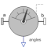

RelativeAnglesMeasure relative angles between two frame connectors |

|
Information
This information is part of the Modelica Standard Library maintained by the Modelica Association.
This model determines the 3 angles to rotate frame_a into frame_b along the axes defined by parameter sequence. For example, if sequence = {3,1,2} then frame_a is rotated around angles[1] along the z-axis, afterwards it is rotated around angles[2] along the x-axis, and finally it is rotated around angles[3] along the y-axis and is then identical to frame_b. The 3 angles are returned in the range
-p <= angles[i] <= p
There are two solutions for "angles[1]" in this range. Via parameter guessAngle1 (default = 0) the returned solution is selected such that |angles[1] - guessAngle1| is minimal. The relative transformation matrix between frame_a and frame_b may be in a singular configuration with respect to "sequence", i.e., there is an infinite number of angle values leading to the same relative transformation matrix. In this case, the returned solution is selected by setting angles[1] = guessAngle1. Then angles[2] and angles[3] can be uniquely determined in the above range.
The parameter sequence has the restriction that only values 1,2,3 can be used and that sequence[1] ≠ sequence[2] and sequence[2] ≠ sequence[3]. Often used values are:
sequence = {1,2,3} // Cardan or Tait-Bryan angle sequence
= {3,1,3} // Euler angle sequence
= {3,2,1}
Parameters (2)
| sequence |
Value: {1, 2, 3} Type: RotationSequence Description: Angles are returned to rotate frame_a around axes sequence[1], sequence[2] and finally sequence[3] into frame_b |
|---|---|
| guessAngle1 |
Value: 0 Type: Angle (rad) Description: Select angles[1] such that abs(angles[1] - guessAngle1) is a minimum |
Connectors (3)
| frame_a |
Type: Frame_a Description: Coordinate system a |
|
|---|---|---|
| frame_b |
Type: Frame_b Description: Coordinate system b |
|
| angles |
Type: RealOutput[3] Description: Angles to rotate frame_a into frame_b via 'sequence' |
Components (1)
| R_rel |
Type: Orientation Description: Relative orientation object from frame_a to frame_b |
|---|
Used in Components (1)
|
Modelica.Mechanics.MultiBody.Sensors
Measure relative kinematic quantities between two frame connectors |